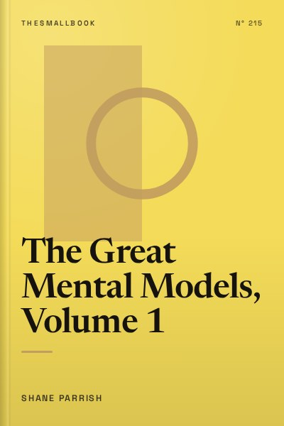

Library › Psychology & People
The Great Mental Models, Volume 1 - Summary & Key Lessons

General thinking concepts: the map is not the territory, first principles, inversion and the tools the best thinkers use.
📖 OPEN THE FULL INTERACTIVE BREAKDOWN →🌐 Read it in Hindi, Hinglish, Gujarati, Tamil & 22 more languages, with audio.
💡 The Big Idea
A mental model is a simplified explanation of how something works. Everyone carries models in their head, but most of us rely on a few from our own field and try to solve every problem with them, like a person with only a hammer seeing nails everywhere. Shane Parrish and the Farnam Street team, inspired by Charlie Munger's idea of a latticework of models, collect the big ideas from many disciplines so readers can view problems from several angles. Volume 1 covers nine general thinking concepts: the map is not the territory, circle of competence, first principles thinking, thought experiments, second-order thinking, probabilistic thinking, inversion, Occam's razor and Hanlon's razor. Each is explained with history, science and business examples, plus warnings about its limits. Used together, they help you understand reality better, which is the foundation of good decisions.
🧠 The 10 Key Lessons
Lesson 1: Why Mental Models: The Latticework
Introduction: Acquiring Wisdom
The book opens with a simple claim: we make poor decisions not because we lack intelligence but because we see only part of the problem. Every discipline has its own powerful ideas, such as compounding from finance, feedback loops from biology and incentives from economics. Specialists tend to use only the models from their field and miss the rest. Charlie Munger argued that you need a latticework of models from many disciplines, hung together, to understand the world. The goal is not to memorise hundreds of ideas but to master the big ones that explain a lot. Parrish also stresses feedback: the world tells you when your models are wrong, but only if you are willing to listen and update instead of protecting your ego.
📖 Example: Munger, Warren Buffett's partner at Berkshire Hathaway, famously described his method as using 'the big ideas from the big disciplines.' He credited this habit, rather than raw IQ, with helping him avoid many mistakes that trapped smarter investors who looked at businesses through a single lens. Read the full example →
⚡ Do this: Write down your field of study or work. List three powerful ideas from a completely different field (biology, physics, history, economics) that might help you see your problems differently.
Lesson 2: The Map Is Not the Territory
Chapter 1: The Map Is Not the Territory
Every model, plan, report or theory is a map: a simplification that helps us navigate reality. Maps are useful because they leave things out. But the danger comes when we confuse the map with the territory and forget what has been left out. Financial models, school rankings, company dashboards and even our beliefs about people are maps. Parrish advises remembering three things: reality is the ultimate update, so maps must change when the territory changes; consider who made the map and for what purpose; and maps can influence the territory, as when people game a metric. Good thinkers use maps but keep looking at the ground.
📖 Example: Before the 2008 financial crisis, many banks relied on risk models that assumed housing prices across the United States would not fall together. The models looked precise, but they left out the possibility of a nationwide collapse. When it happened, institutions that trusted the map over the territory suffered huge losses. Read the full example →
⚡ Do this: Pick one number you rely on (marks, follower count, monthly revenue). Write down two important things that number does not capture.
Lesson 3: Circle of Competence
Chapter 2: Circle of Competence
Your circle of competence is the area where you genuinely understand how things work, built through years of experience and feedback. Inside it, you can spot problems and opportunities others miss. Outside it, you are a tourist who does not know what you do not know. The size of the circle matters less than knowing where its edges are. Parrish suggests three practices: be curious and keep learning to expand the circle, monitor your track record honestly, and seek feedback from people who will tell you the truth. When you must act outside your circle, learn the basics, talk to experts and be extra careful.
📖 Example: Warren Buffett famously avoided investing in technology companies for decades because he felt he did not understand them well enough. He missed some winners, but he also avoided the dot-com crash of 2000 that wiped out many investors who bought tech stocks without understanding the businesses. Read the full example →
⚡ Do this: Draw a circle and write inside it three topics where you have deep, tested knowledge. Write outside it one area where you often give opinions without real expertise.
Lesson 4: First Principles Thinking
Chapter 3: First Principles Thinking
First principles thinking means breaking a problem down to its basic, proven truths and reasoning up from there, instead of reasoning by analogy or tradition. It helps you separate what is truly necessary from what is assumed. Two techniques help: Socratic questioning (asking why, how do I know this, what if the opposite were true) and the Five Whys (asking why repeatedly until you reach the root cause). First principles thinking is how people find solutions others miss, because they are not bound by 'this is how it has always been done.'
📖 Example: When Elon Musk looked into rockets, he found them extremely expensive to buy. Instead of accepting the price, he asked what a rocket is made of and what those materials cost. The raw materials were a small fraction of the price, which led SpaceX to build rockets in-house and pursue reusability. Read the full example →
⚡ Do this: Choose one expensive or frustrating part of your life or work. Ask 'why' five times to find its root cause, then brainstorm a solution that starts from that root.
Lesson 5: Thought Experiments
Chapter 4: Thought Experiments
A thought experiment is a way to explore an idea by imagining a scenario and following its logic, without needing a real experiment. They help test theories, imagine the impossible and reveal hidden assumptions. A good thought experiment follows steps similar to the scientific method: ask a question, research, state a hypothesis, imagine the test, analyse outcomes and draw conclusions. Thought experiments are also useful for personal decisions, such as imagining yourself at 80 looking back on a choice.
📖 Example: Albert Einstein imagined riding alongside a beam of light, a thought experiment that helped him develop the theory of special relativity. Philosophers use the 'veil of ignorance,' imagining designing a society without knowing your place in it, to think about fairness. Read the full example →
⚡ Do this: For a decision you are facing, imagine yourself ten years from now. Write a short paragraph about what that future you would advise.
Lesson 6: Second-Order Thinking
Chapter 5: Second-Order Thinking
First-order thinking considers the immediate result of an action. Second-order thinking asks 'and then what?' It considers the consequences of consequences, often over longer timeframes. Many problems arise because people act on first-order benefits while ignoring second-order costs. Second-order thinking also helps build trust and avoid unintended effects. Parrish warns not to fall into paralysis; the aim is to consider the most important downstream effects, not every possibility.
📖 Example: During British rule in India, officials reportedly offered a bounty for dead cobras in Delhi to reduce their numbers. People began breeding cobras to collect the reward. When the bounty ended, breeders released the snakes, and the population grew. This 'cobra effect' is a classic failure of second-order thinking. Read the full example →
⚡ Do this: Before your next important decision, write down its immediate effect and then two 'and then what?' consequences.
Lesson 7: Probabilistic Thinking
Chapter 6: Probabilistic Thinking
The world is uncertain, so good thinkers estimate probabilities rather than seeking certainty. Parrish highlights three tools: Bayesian thinking (updating beliefs with new evidence while considering prior knowledge), fat-tailed distributions (recognising that some domains have extreme events more often than expected) and asymmetries (people tend to overestimate their odds of success). Thinking in probabilities reduces overconfidence and helps prepare for surprises.
📖 Example: Insurance companies use probabilities to price policies, estimating how often events such as accidents or floods occur. Investors who ignored fat tails, assuming market crashes are extremely rare, were caught unprepared in crises like 2008. Read the full example →
⚡ Do this: For a plan you are making, estimate the probability of success as a percentage. Then list what evidence would make you raise or lower that estimate.
Lesson 8: Inversion: Think Backward
Chapter 7: Inversion
Inversion means approaching a problem from the opposite end. Instead of asking how to succeed, ask what would guarantee failure, then avoid those things. Munger often quoted the mathematician Carl Jacobi: 'Invert, always invert.' Inversion helps identify obstacles, reduce mistakes and see problems more clearly. It complements forward thinking rather than replacing it.
📖 Example: Instead of asking how to be healthy, you might ask what would make you unhealthy: poor sleep, junk food, no exercise, constant stress. Avoiding these often improves health more than chasing the latest diet. Read the full example →
⚡ Do this: For a goal you have, write down five things that would guarantee failure. Choose one to eliminate this week.
Lesson 9: Occam's Razor: Prefer the Simpler Explanation
Chapter 8: Occam's Razor
Occam's razor suggests that, among competing explanations, the simplest one that fits the evidence is usually the best starting point. Simpler explanations require fewer assumptions and are easier to test. Parrish warns that simplicity is a guide, not a law; some phenomena are genuinely complex. The razor helps avoid over-complicated theories, conspiracy thinking and unnecessary worry.
📖 Example: If your phone suddenly stops charging, it is more likely a faulty cable than a complex software problem. Checking the simple cause first saves time. Read the full example →
⚡ Do this: Next time you are worried about a problem, write down the simplest explanation and test it before considering complex ones.
Lesson 10: Hanlon's Razor: Do Not Assume Malice
Chapter 9: Hanlon's Razor
Hanlon's razor advises not attributing to malice what can be adequately explained by mistakes, ignorance or carelessness. People often assume others are acting against them deliberately, which leads to conflict and poor decisions. Assuming error rather than malice keeps relationships healthier and helps solve the real problem. Parrish notes exceptions: sometimes malice is real, and being naive can be costly.
📖 Example: A colleague forgets to include you in an important email. Instead of assuming they are excluding you on purpose, you ask about it and learn it was an oversight. The relationship stays intact and the problem is fixed. Read the full example →
⚡ Do this: The next time someone upsets you, write down one innocent explanation for their behaviour before reacting.
✅ 5-Step Action Plan
- List three ideas from a field outside your own that could help your work.
- Draw your circle of competence and mark one area where you overstep.
- Use the Five Whys on one recurring problem.
- Before decisions, ask 'and then what?' twice.
- Invert one goal by listing what would guarantee failure.
⚠️ When This Doesn't Work
Mental models can become a collection hobby: knowing the names without using them. They also come from mostly Western, business-focused sources. Indian traditions, from the Nyaya school of logic to the Arthashastra, offer their own powerful models. Use the book as a starting toolkit, apply a few models deeply and add models from your own culture and field.
💀 The Graveyard Proves It
💬 Best Quotes from The Great Mental Models, Volume 1
- “The map is not the territory.”
- “The quality of our thinking is proportional to the models in our head and their usefulness in the situation at hand.”
- “Avoiding stupidity is easier than seeking brilliance.”
Interactive version: mark lessons as read, listen in your language, share quote cards.